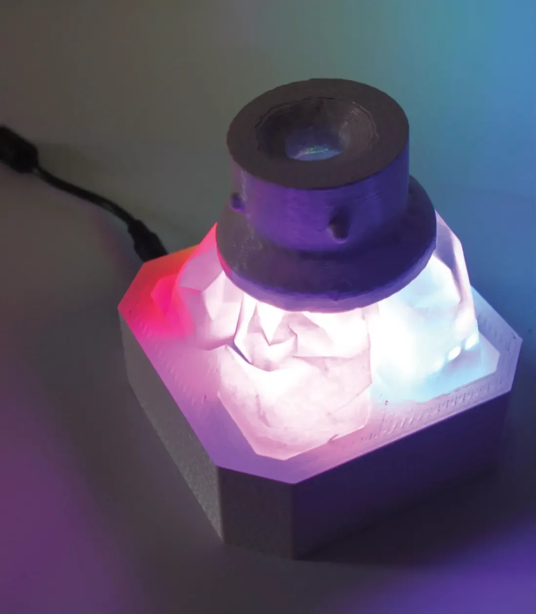
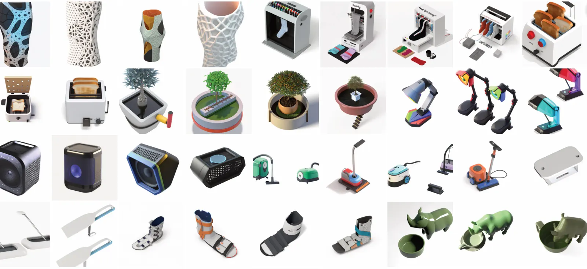
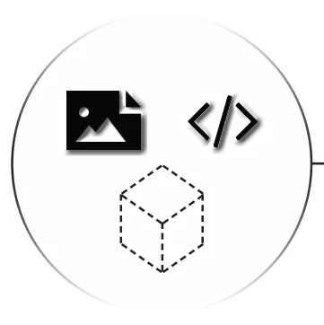
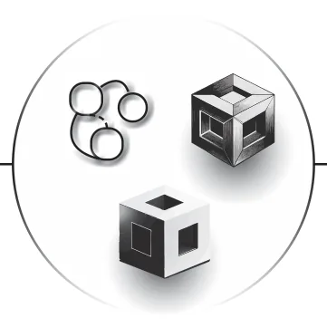
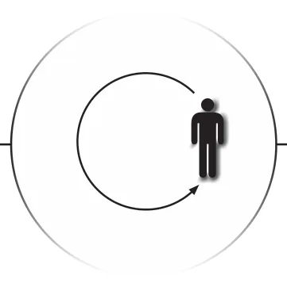
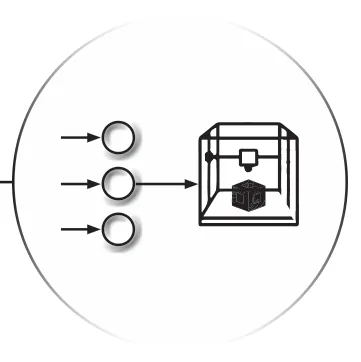
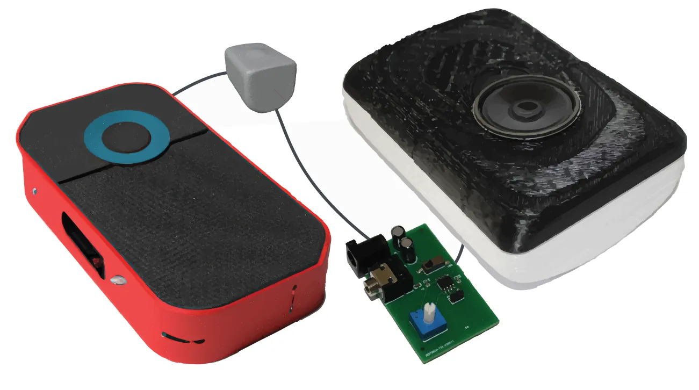
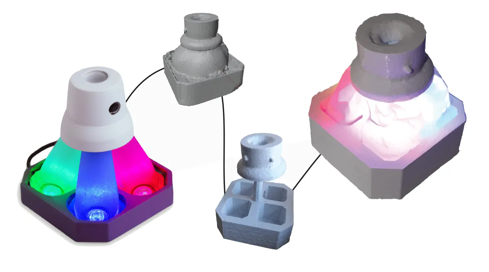
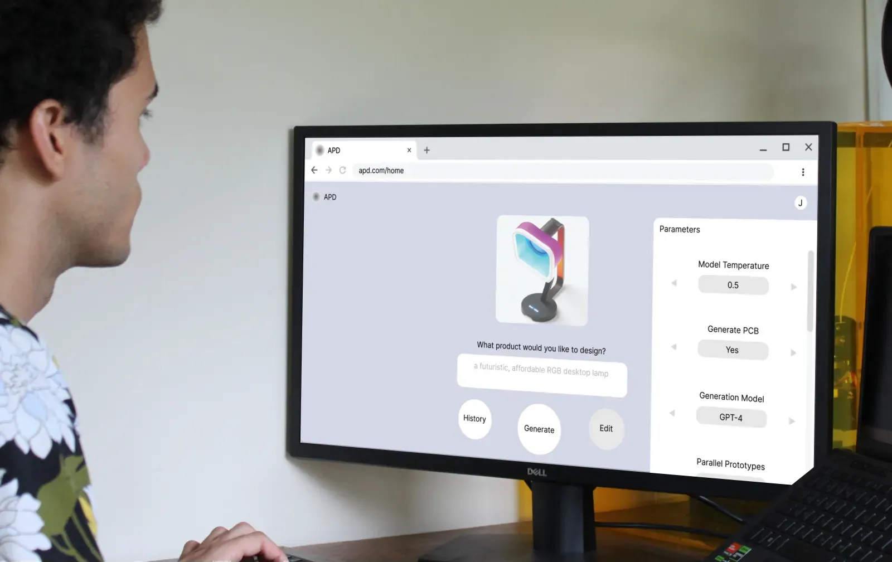

Automated Product Development2022–23
APD
Generative Design and Electronics
How might we leverage machine intelligence for improved efficiency in early stage product development?

APD is a software system based on open source tools that can take in a product description and output specifications, component lists, images, 3D models, PCBs, BOMs, diagrams and code to accelerate the prototyping process.
There is continuous pressure on companies to develop increasingly complex products in shorter amounts of time. Many companies look towards design automation and optimisation of the product development process to give them a competitive advantage. A trend from the past identified in CAD/CAM and EDA is that as industries mature, they move away from new and innovative software and focus on efficiency improvements and integration of tools into one overarching system. It is time to apply this to AI and ML for product development and explore the wide variety of emerging automation tools to investigate what they can achieve when put together.
The Vision
Imagine that there's a platform that you could give a product specification or even just a description. This program would co-design with you, allowing you to intervene at any point but ultimately providing you the key components to make your product: the CAD, the electronics design, the software, simulation tests, renders...
Pair this with decentralised manufacturing centres incorporating advanced additive manufacturing as well as CNC/Pick and place/PCB machinery. Imagine amazon, but every product is generated for you, taking into account your needs and environment whilst optimising for sustainability and local production.

Simplified Automated Product Development System
-

Inputs
The main inputs to the platform are prompts. One for the technical product description, one for the image as the desired look and 3D model might be different, and one for the firmware code.
-

Main Generative Steps
Using the product prompt, the platform breaks the design down into a specification, components, and connections between the components. It sorts these into mechanical and electrical categories and any likely subassemblies. It then suggests matches to these components from live libraries. This hierarchical product system is shown in a system diagram.
Using the image, it generates a variety of concept images, and then a .PLY 3D model that can be opened in Blender.
-

Co-design, Checking and Revision
This platform is meant to aid the design engineer, improving efficiency. It also democratises design by bringing understandable tools to more of the population. It is a 'human in the loop' style workflow where the user can intervene at any time. The platform asks the user at this stage to perform checks to align goals and reduce material waste.
-

Outputs
Once the user is happy, the platform outputs files such as STL CAD models, GCODE, a BOM, a PCB netlist and any needed firmware to permit further fabrication. The workflow can be directly connected to a 3D printer for further automation.

Computational Engineering
APD embraces the principles of computational design and engineering. By applying software development principles to hardware we can further accelerate the rapid prototyping process and iterate more efficiently, bringing more knowledge to the early stages of product development.

2D to 3D to Prototype
To demonstrate the capabilities of the platform, I designed, physically built, and tested two products. Minimal user intervention was applied beyond that which was needed to generate a working product and sensible outputs, to test the platform's limitations.
The first product chosen was a speaker. It was selected for multiple reasons: a modellable size, an adjustable form, a common functional product breakdown, ongoing audio experience research, relatively simple electronics, simple code (if any) and extension to newer products such as AI assistants. The speaker example showed integrated custom PCB generation capabilities.
The second product chosen was a lamp due to the above factors and a comparable number of models in the ShapeNet data set. The lamp example explored integrated custom firmware generation.
The Future of APD
As part of the initial project I completed an extensive ethics study to assess how this technology can best be developed to bring about social good.
